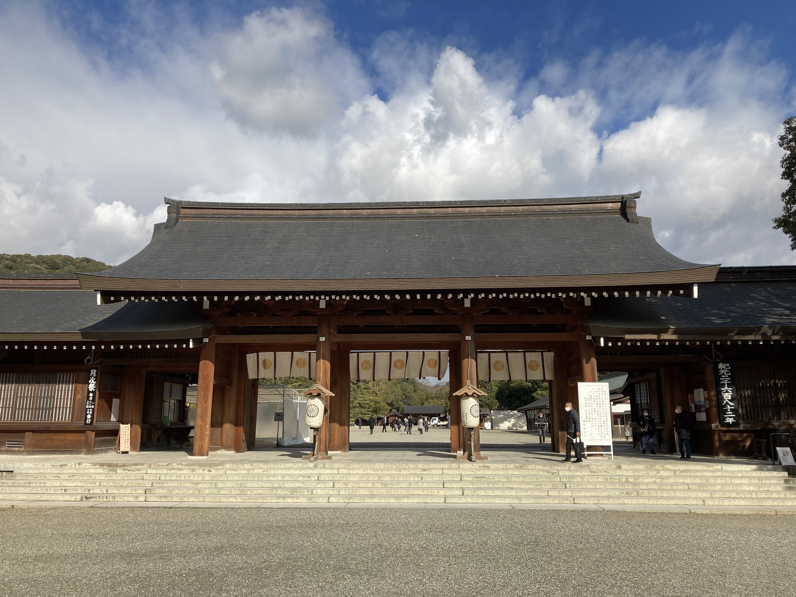

奈良観光記録
一日目
今は夜中で、ここはTHE KASHIHARAというホテルだ。ある人にぜいたくをさせてもらってここに居る。申し訳ないと思うのが普通かもしれないけれど、僕はこういうときは面白そうなことなら乗ってみたいと思うのだ。
Figure 1: 本日の役目を終えた売店
Figure 2: 古事記
旅の記録をつけようと思って、こんなツイートをした。
二日目
旅の記録が長くなりそうだと思ったから、これ以降ツイートはやめてブログにまとめてみることにした。
Figure 3: 朝食バイキング
僕は珍しい食べ物を食べるのが好きだ。旅先ではその地の名物を食べないわけにはいかない。現地の名物を効率よく食べるにあたって、いろいろなものを少しずづ食べられるホテルのバイキングほど適切なものはない。もともと食事込みのプランではなかったが、追加で朝食のチケットを買ってしまった。
右奥の汁物は飛鳥鍋というやつで、シチューのような味がしてとてもおいしい。左奥の白い飲み物はバナナと酒粕のスムージーというやつで、これも複雑な味がしておいしい。
右手前のおかゆみたいなやつは茶粥である。「茶粥が名物になった背景は、源平の合戦で出た落武者が貧しい生活を強いられたためではないか」とレストランのスタッフさんが独自の考察を聞かせてくれたが、真実はわからない。
Figure 4: 三輪素麺
Figure 5: 大和牛と地野菜のカレーご飯
スタッフさんに勧められたカレースープ。
Figure 6: ☆がついているのは全部食べた
ホテルを出た。スマホで気温を調べると2度だった。そこそこ寒い。
橿原

Figure 7: でかい灯籠
初めに訪れたのは橿原神宮である。入口の灯籠(であってるだろうか？)を見上げた。スケールがでかい。

Figure 8: 日本はじまりの地に来た
橿原神宮は神武天皇が祀られていることから「日本はじまりの地」と呼ばれているらしい。

Figure 10: おみくじ
おみくじを引いた。中吉であった。
飛鳥
Figure 11: 飛鳥駅からの景色
続いて飛鳥を訪れた。高松塚古墳が目当てである。けれど寒さが溜っていたので、あたたかい食べ物で体をあたためてからにしようと思って店を探したところ、珈琲店を見つけた。
Figure 12: 抹茶ぜんざい(栗入り)。でかい。
メニュー曰く、
「当店では本来の抹茶の風味を楽しんでもらう為、石うすを使って丹念に挽いた純正の宇治茶を使用しています。 本物の味をぜひ一度ご賞味下さい。」
らしい。餅は一つしか入っていなかったけれど、小豆のおかげか思ったよりお腹が満たされた。
徒歩15分程で飛鳥歴史公園に着いた。

Figure 13: 高松塚古墳
実は古墳というものは初めて見る。ギザのピラミッドくらい大きいものかと思っていたが、意外と小さいことがわかった。

Figure 14: 中尾山古墳
奈良
最後に訪れたのは春日大社だ。
哺乳類の匂いがする。その辺りに鹿がいるからである。
帰る時間が近づいていて、奈良市での時間は短かかったのが、少し残念である。
駅で買って、帰りのバスの中で食べた「わさび葉寿し」という食べ物。遅めの時間だったので三割引で売っていた。
今度来た時は奈良の名物で有名な柿の葉寿司も食べてみたい。